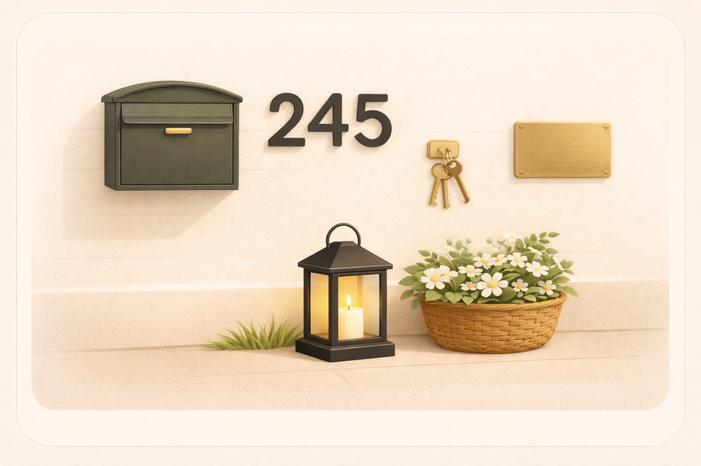
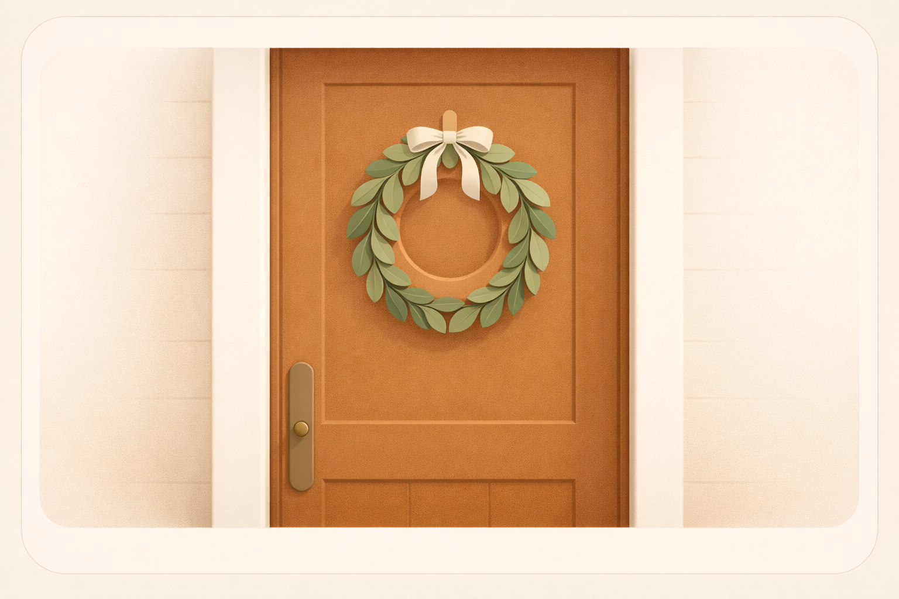
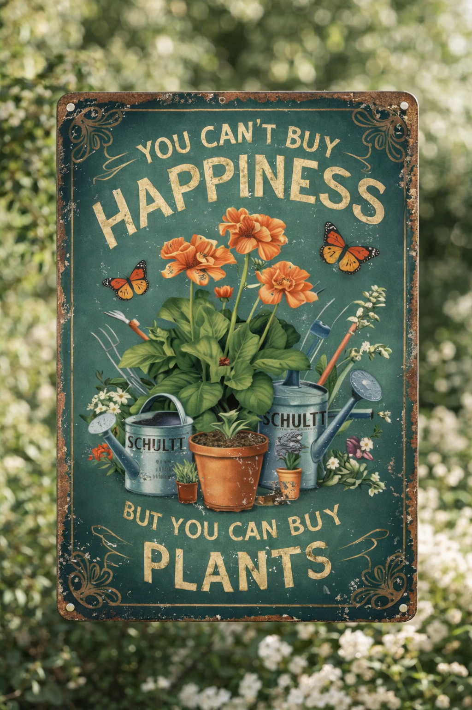
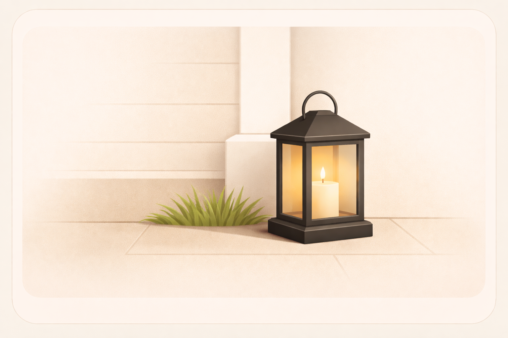
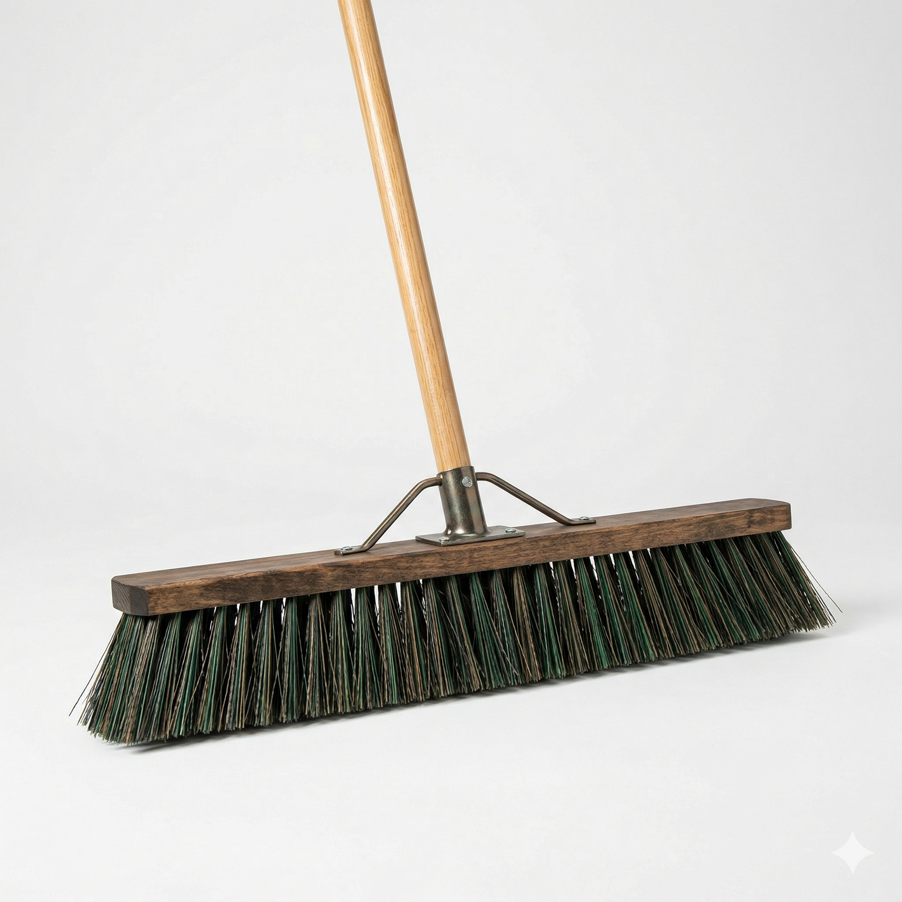
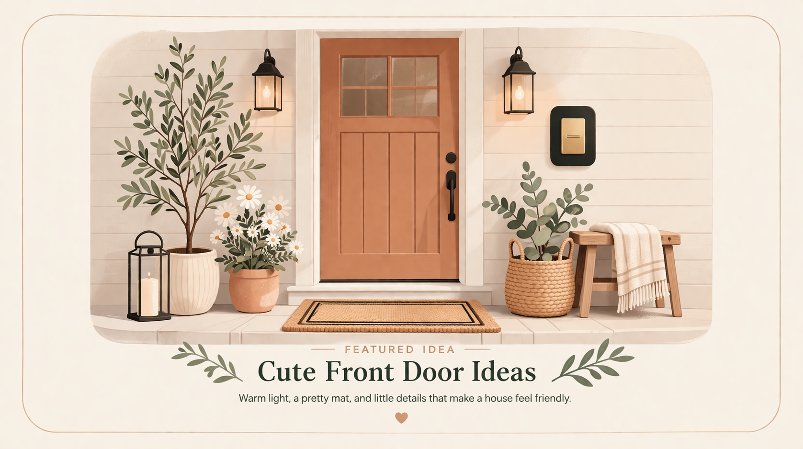
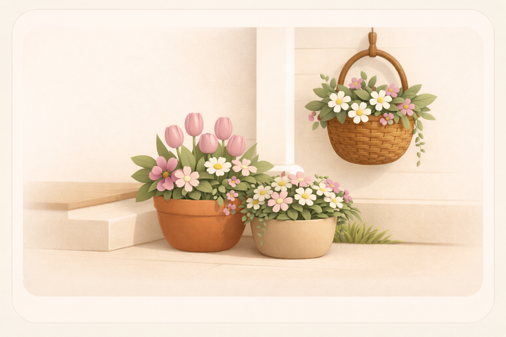

Start with the detail the eye reads first
That is usually the numbers or whatever sits closest to the door. If that looks crisp, the whole front immediately feels more intentional.
Cute Finds
A few crisp little front-door details can make the whole house feel more cared for from the curb.

The tiny front-door details usually do more than people expect. One sharp set of numbers, one lantern, one sweet sign or wreath, and suddenly the whole front reads better.
These details read quickly from the curb and sidewalk, which is why even small changes can make the house feel more intentional.
They are also low-lift. You can improve the exterior noticeably without starting a large project.
How to try it
That is usually the numbers or whatever sits closest to the door. If that looks crisp, the whole front immediately feels more intentional.
A lantern, wreath, or sweet sign can add warmth without turning the whole porch into a display.
Dark metals, simple shapes, and natural texture usually look better than a mix of competing styles.
Small details
Start with the few pieces that carry most of the visible charm.
Some Neighborhood Ideas links are affiliate links. As an Amazon Associate, Neighborhood Stewardship Project may earn from qualifying purchases.
Fresh house numbers are one of the quickest little fixes for making the front of a house feel sharper and more considered.

A soft wreath gives the front door an instant little layer of charm without asking you to decorate the whole porch.

This is the kind of tiny personality piece that makes a porch or garden corner feel more loved right away.

A black lantern brings just enough glow-and-texture energy to make the front feel extra finished.
Helpful extras
These are the behind-the-scenes pieces that keep the cute part low stress.

It is not the glamorous part, but it is often what helps the cute part stay cute.
More in Cute Finds Worth Saving

Front Door
A better mat, warmer light, and one or two well-chosen details can make the whole front of a house feel more welcoming.
Read idea
Seasonal
A strong planter, a little greenery, and flowers near the steps can make the entry feel fuller and more cared for.
Read idea